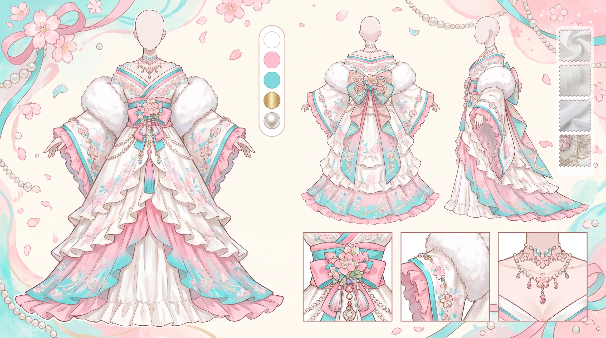
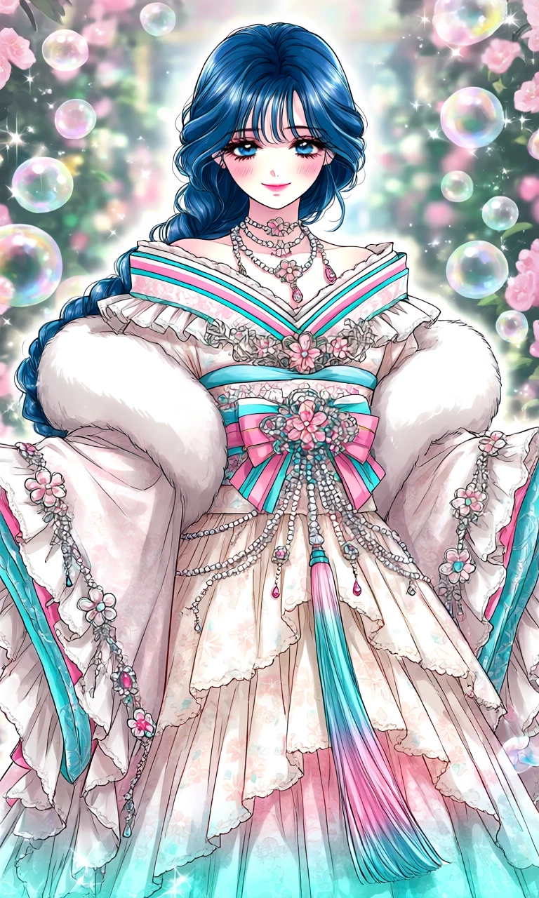
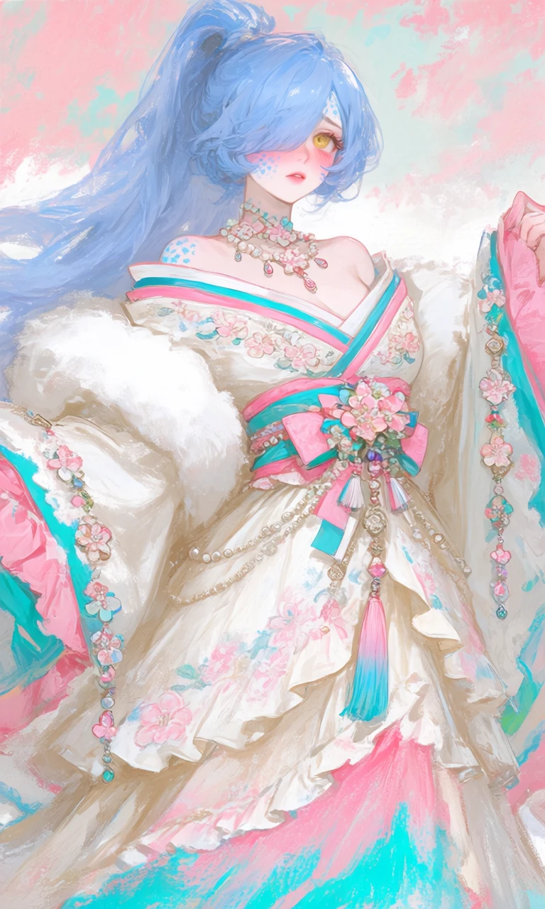

Sakura Snowfall

Outfit Prompt
Outfit: Is a beautifully regal and detailed kimono.
Neckline & Shoulders: Wide, structured off-shoulder collar with layered fabric in white, accented by pink and turquoise stripes. Puffy, voluminous upper sleeves/shoulders that create a soft, rounded silhouette.
Multiple layered necklaces: pearl-like strands, floral pendants, and dangling beads with pink/blue gems. A small floral choker at the neck.
Bodice & Waist: The central focus is a beautifully wrapped obi-style sash/bow in pink and turquoise. The bow features a large decorative centerpiece with flowers, pearls, and hanging tassels/ribbons. Delicate floral embroidery and appliqués adorn the chest area. Long, beaded chains and tassels hang down from the waist/chest area, including a prominent vertical pink-to-blue gradient tassel.
Sleeves: Very wide, flowing kimono/hanfu-style sleeves. She's wearing a white fur boa. Ruffled edges with turquoise trim. Floral motifs and hanging decorative chains with flowers and gems on the sleeves. The sleeves appear semi-sheer in places, especially lower down.
Skirt: Multi-layered and tiered for volume and movement. The base is white/cream with subtle pink and blue floral patterns that become more prominent toward the hem. Ruffled layers give it a soft romantic feel. The hem has a beautiful turquoise border that fades upward into pink and white.
Outfit Examples



